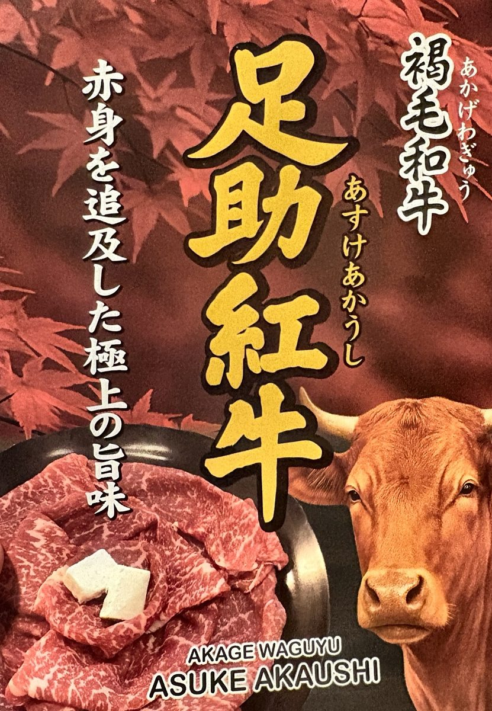
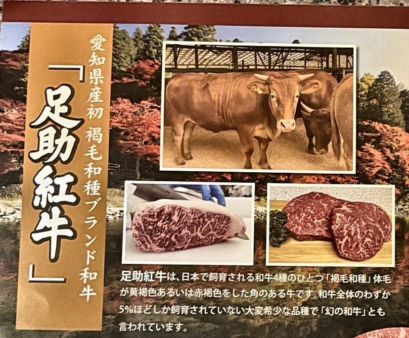

足助紅牛
あすけあかうし
豊田・足助で育った、あか牛。
サシは少なく、噛むほどに赤身の味が出ます。
Asuke Akaushi
おすすめする前に、
お好みを伺います。

九州・阿蘇で生まれた子牛を、豊田市足助の大見高原牧場が育てた褐毛和種です。愛知県産初の褐毛和種ブランド和牛にあたります。
当店が扱う和牛のなかで、この牛だけは少し扱いが違います。お品書きに載せて黙って出す、ということをしていません。おすすめする前に、お客様の好みを伺うことにしています。
理由は単純で、好みがはっきり分かれるお肉だからです。合う方にはこれ以上ないものになりますが、合わない方には「硬い」で終わってしまいます。それでは、育てた方にも、お客様にも申し訳が立ちません。
Rare breed
和牛全体の、わずか5%

褐毛和種は、日本で飼育される和牛4種のひとつ。体毛が黄褐色あるいは赤褐色をした、角のある牛です。
飼育されているのは和牛全体のわずか5%ほど。大変希少な品種で、「幻の和牛」とも言われます。そのなかでも足助紅牛は、愛知県で初めてブランド化された褐毛和種です。
写真提供：足助紅牛
Character
どんなお肉か
サシは少なめです。脂の甘みで食べさせるお肉ではありません。
噛むと、赤身そのものの味がじわじわと出てきます。これには理由があって、黒毛和牛よりも旨味成分であるアミノ酸を豊富に含んでいるとされています。噛むほどに味が出るのは、気のせいではありません。
黒毛和牛に比べると噛み応えはやや強く、そこを「食べ応えがある」と取るか「硬い」と取るかで、評価がはっきり分かれます。
色は、足助の香嵐渓の紅葉を思わせる鮮やかな赤身。脂はあっさりとしています。数年前から「赤身嗜好」と言われてきましたが、その求めにこれほど正面から応えるお肉は、そう多くないと思っています。
For whom
向いている方・
向いていないかもしれない方
向いている方
・赤身の旨みをしっかり味わいたい方
・肉を噛んで食べるのが好きな方
・脂が重く感じることがある方
「重いのは苦手、でも肉はしっかり食べたい」——そういう方に、これ以上のものはないと思っています。
向いていないかもしれない方
・やわらかさを第一に求める方
・脂の甘みがお好きな方
この場合、当店では別のお肉をおすすめします。好みに合わないものをお出ししても、お互いに良いことがありません。
How to eat
おすすめの食べ方
味付けは塩。タレより、肉そのものの味がはっきり出ます。
厚切りで弾力を楽しむ
噛み応えと、噛むほどに出てくる赤身の味を楽しみたい方へ。表面に焼き目が付くまで焼き、同じだけの時間を取り皿で休ませ、食べる直前にさっと温めてください。
薄切りでやわらかさを出す
噛み応えが気になる方へ。片面5秒、返して5秒で十分です。それ以上焼くと硬くなり、せっかくの旨みが逃げます。
Availability
入荷について
月に2回ほど、リブロースやランイチを中心に仕入れています。
生産数が多い牛ではありません。常にご用意できるわけではなく、入荷日のご提供が中心です。ご来店の際にお尋ねください。入荷の日は、Instagramでお知らせすることもあります。
Producer
育てている方
有限会社大見高原牧場（愛知県豊田市東大見町）
九州・阿蘇で生まれた子牛を引き受け、豊田市足助地区の自然のなかで育てておられます。愛知県内の肉用牛では新しい取り組みで、市内の精肉店と連携してブランド牛「足助紅牛」として売り出されました。あすけ紅牛とも表記されます。
当店は、この牛を焼肉としてお出ししています。
Why
なぜこの牛を扱うのか
ひとつは、味です。もうひとつは、地元の牛だからです。
豊田市で育った牛を、豊田市の焼肉屋が出す。それだけのことですが、地元の畜産が育つきっかけになればと思っています。みかわ牛の指定店を続けている理由とも、根は同じです。
手間のかかる牛です。黙って出せば伝わるものではなく、こちらが伺って、説明して、焼き方までお伝えしてはじめて良さが届きます。それでも扱うのは、届いたときのお客様の反応が、はっきり違うからです。
まずは一度、召し上がってください
言葉より、食べていただくのが早いと思っています。入荷の有無はお電話でもお確かめいただけます。